Photos
Moments from conferences, talks, and research visits.
IEEE ICASSP 2026 · Barcelona, Spain
We presented our work on low peak-to-average power ratio multiple-access waveforms.

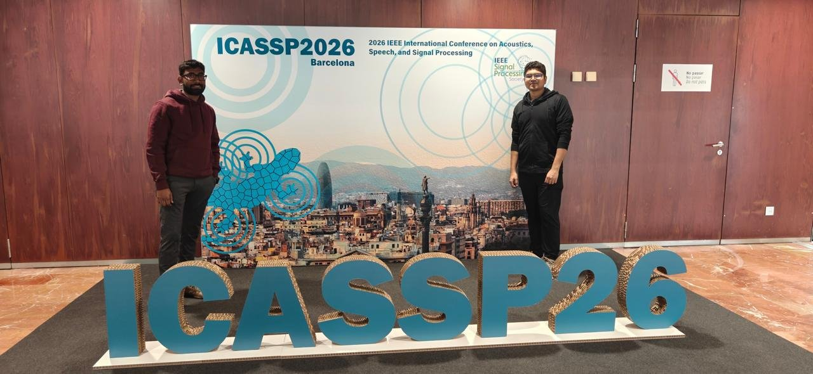
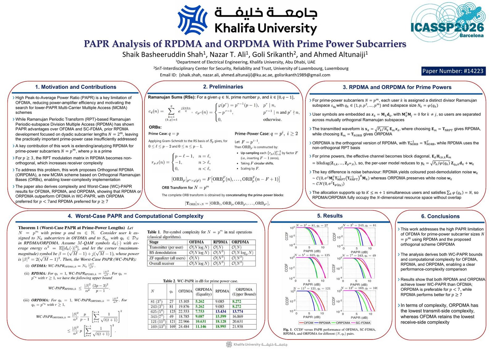

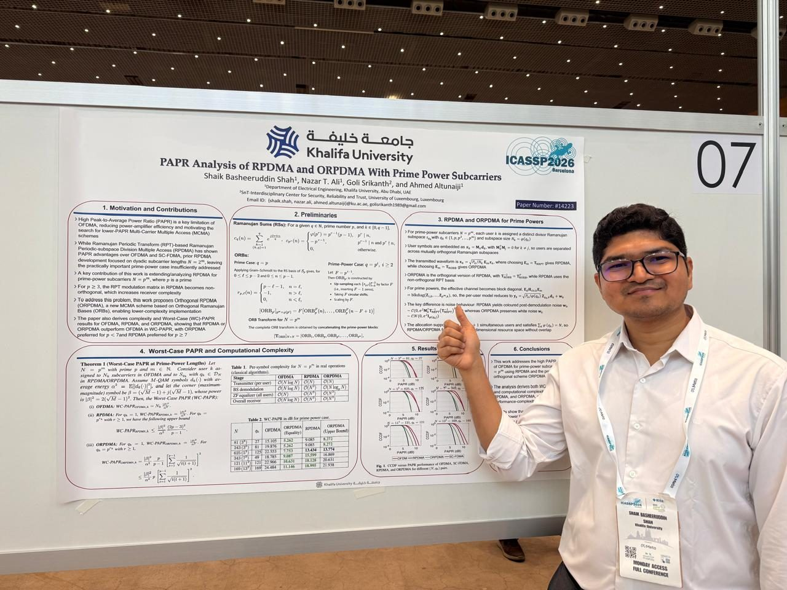

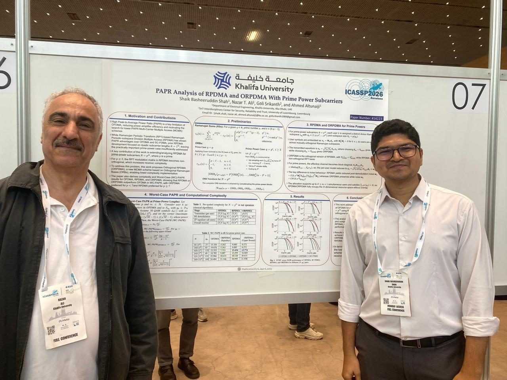

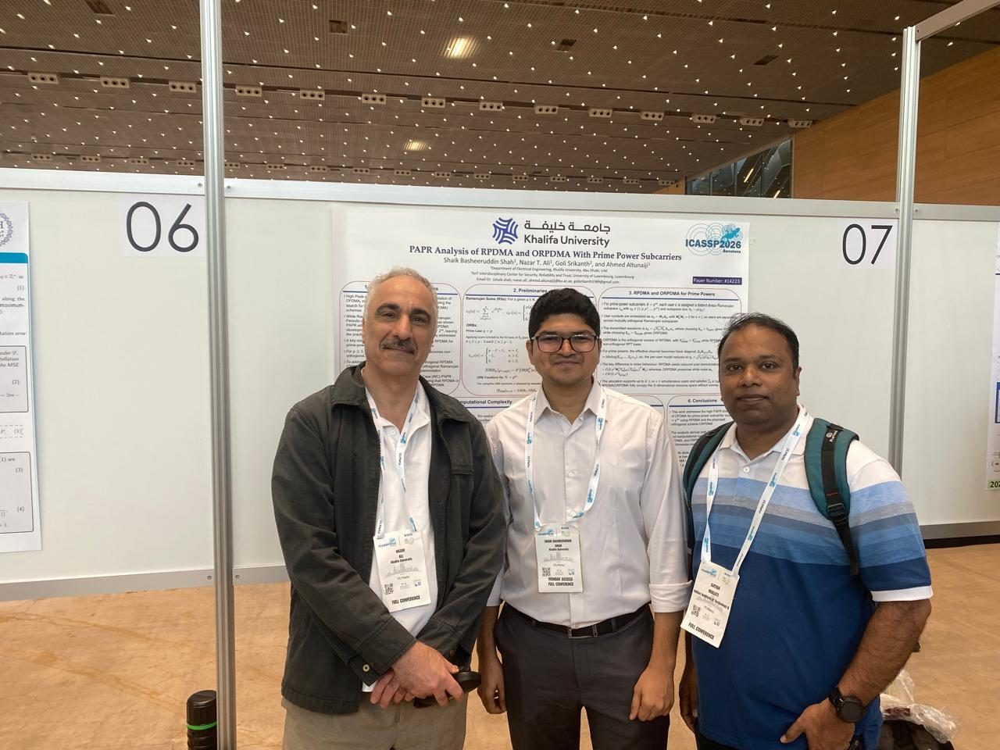

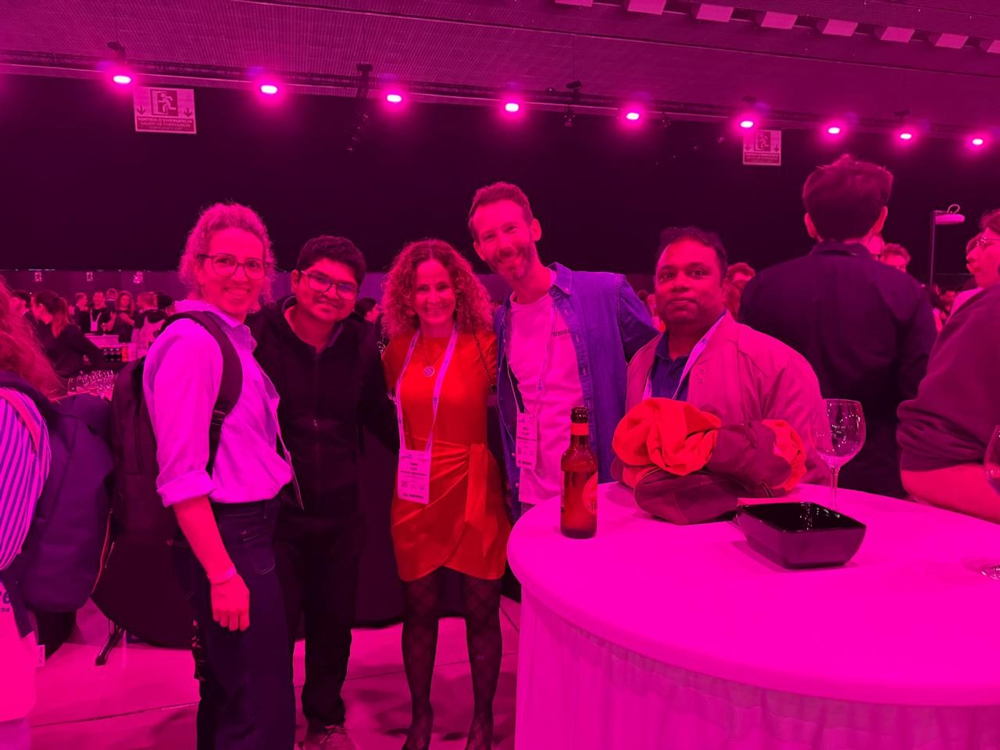

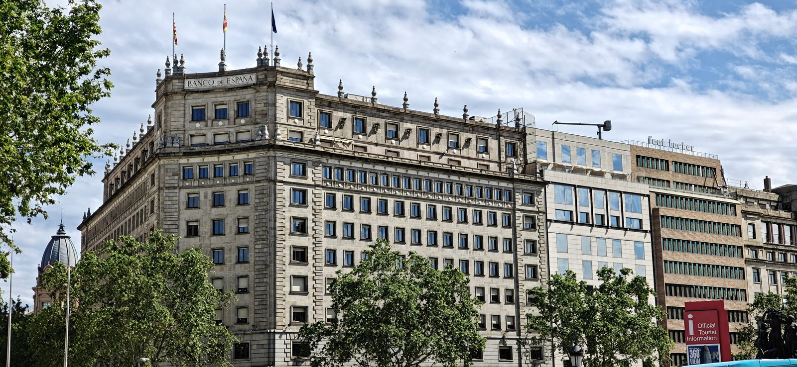

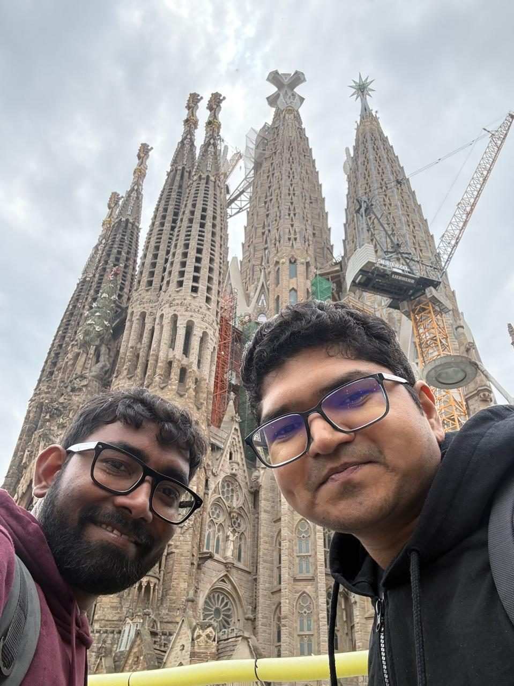

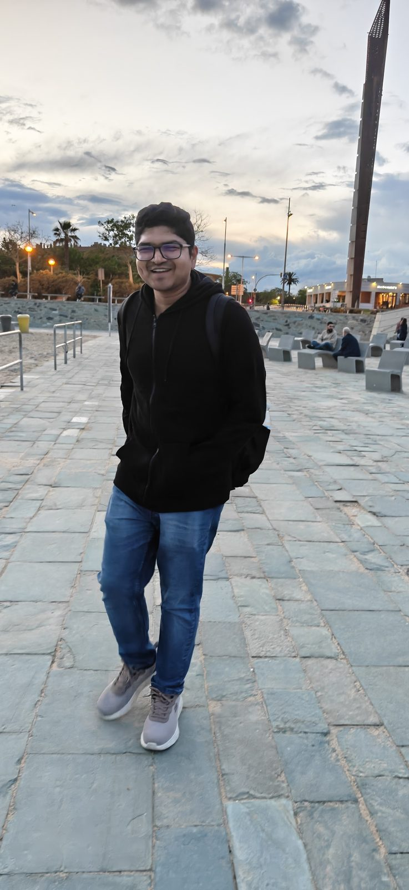

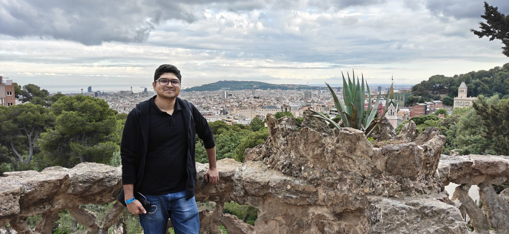

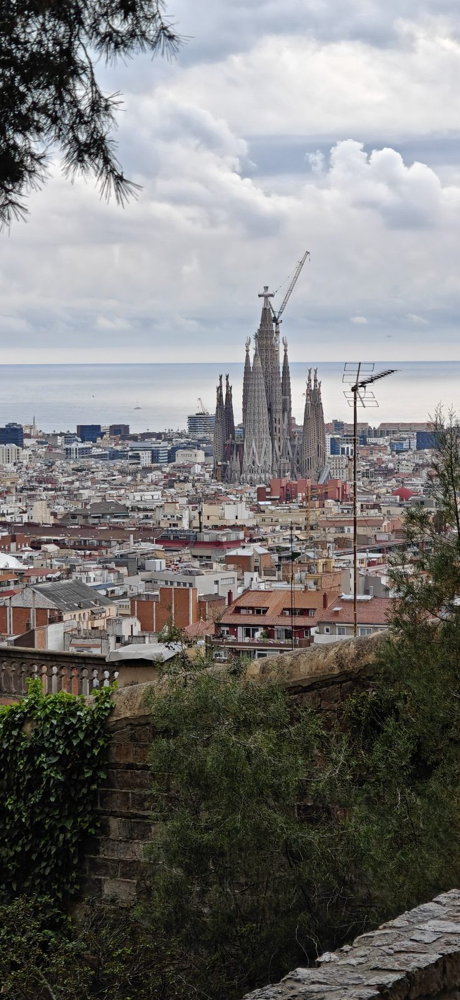

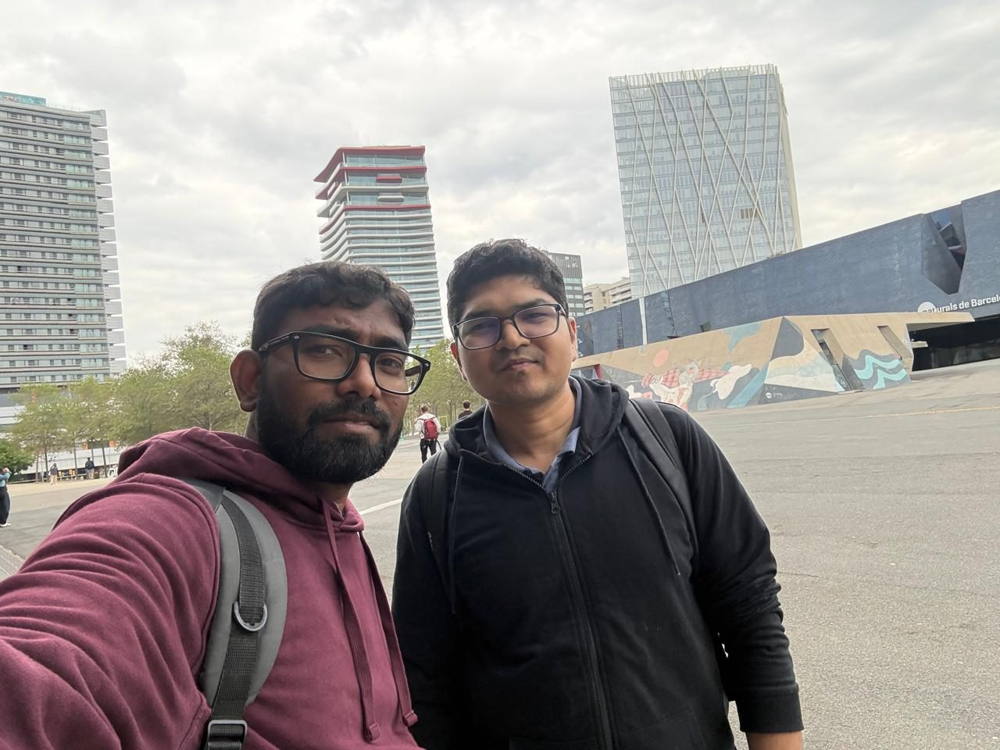

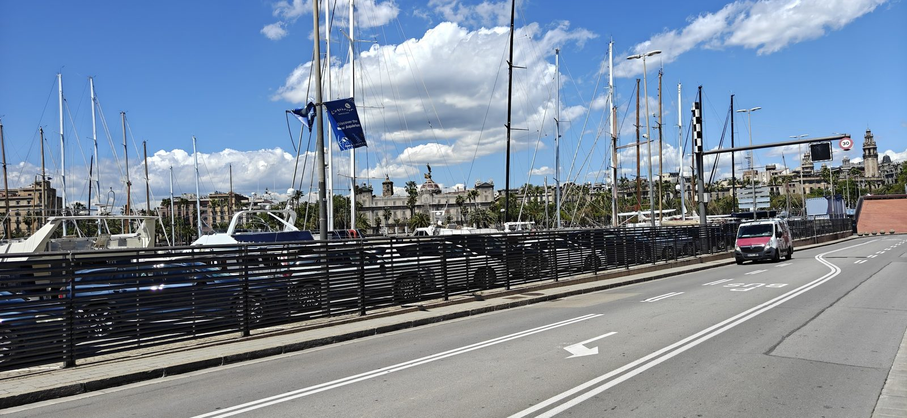
IEEE ICASSP 2025 · Hyderabad, India
We presented our work on coprime frequency sum based signal representation for period estimation.


IEEE ICASSP 2024 · Seoul, South Korea
We presented our work on Recursive-Tail-FISTA for sparse signal recovery, along with a hardware demo.


IEEE ICASSP 2023 · Rhodes, Greece
We presented a hardware demonstration of a low-rate, high-dynamic-range analog-to-digital converter, and a paper on LASSO-based fast residual recovery for modulo sampling.